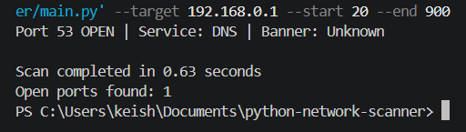

Target handling
Accept a target host and a port or port range for scanning.
A small network utility built with Python socket programming to explore TCP connectivity, port scanning and network visibility.
This Python network scanner explores how network connections can be tested programmatically. It uses socket programming to attempt connections to selected ports and reports which services appear reachable.
The project connects software development with practical networking: rather than relying only on a graphical scanner, it builds a small tool and exposes the logic behind port scanning.
Accept a target host and a port or port range for scanning.
Use Python socket connection attempts to test port reachability.
Present the results so reachable ports can be identified.
connect_ex.A port scanner is a measurement tool, not proof that a service is vulnerable. An open port indicates that a connection was accepted; identifying the service and assessing its security require additional investigation.
Future improvements can include controlled concurrency, timeouts, clearer error handling and optional service identification. Only scan systems you own or have explicit permission to assess.
Tested against a controlled local target to verify TCP port reachability detection, terminal reporting, and structured JSON output generation.
